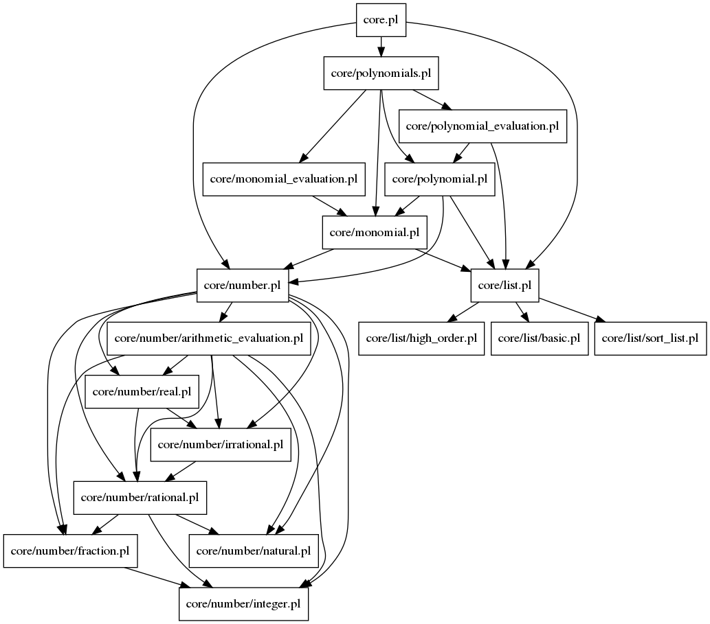

Documentation for Prolog file: core.pl
File used to include all predicates that make up the core of this symbolic calculator.

Included files:
core/number.html
core/list.html
core/polynomials.html
Generated with DYP